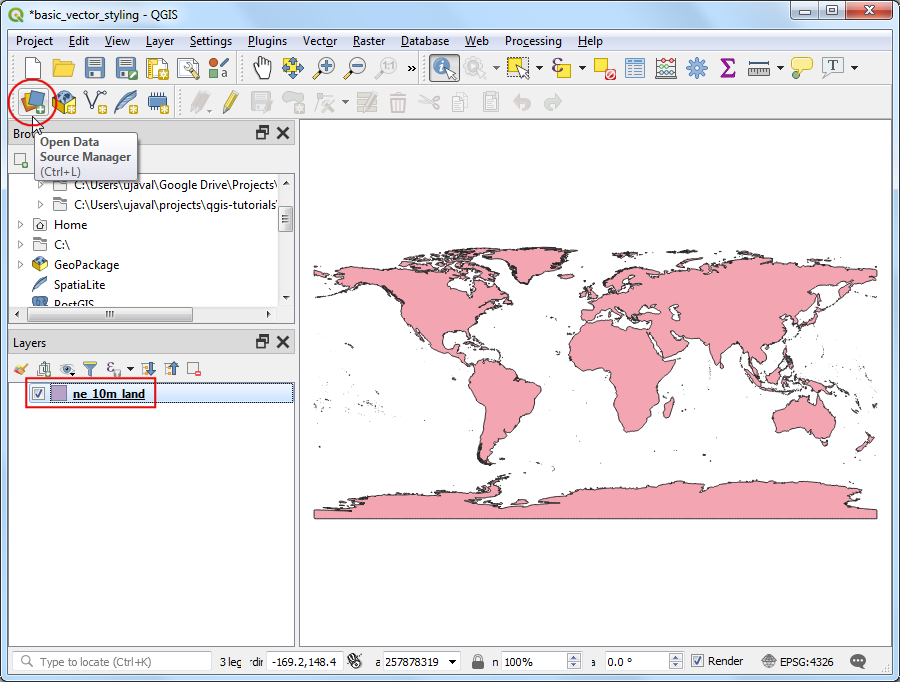
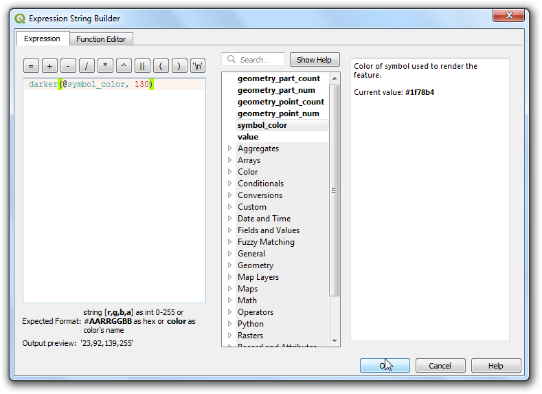
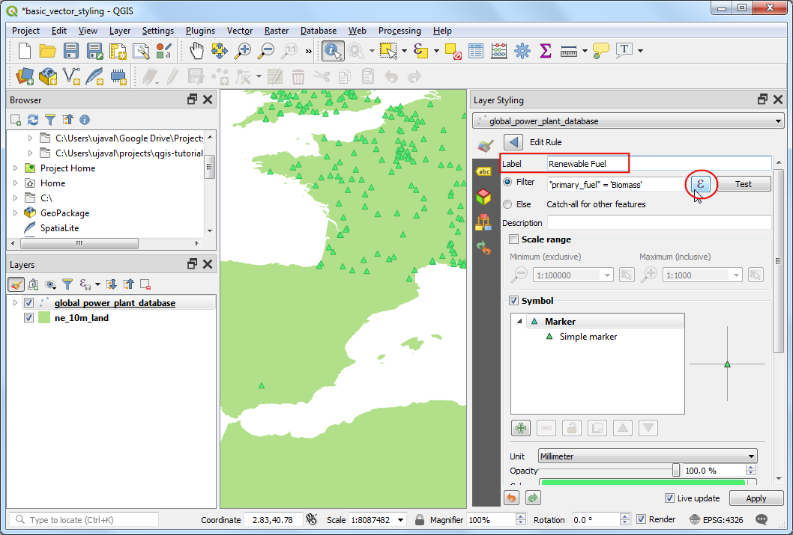
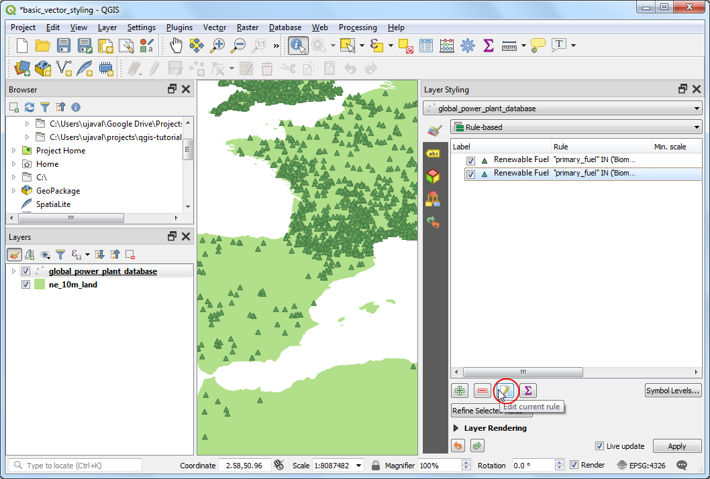
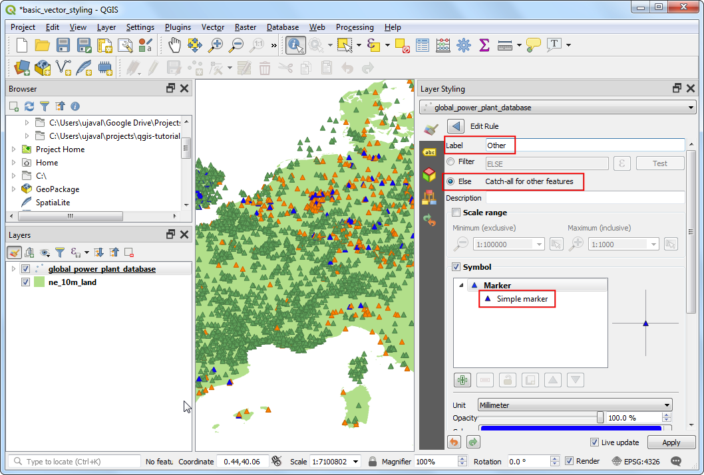
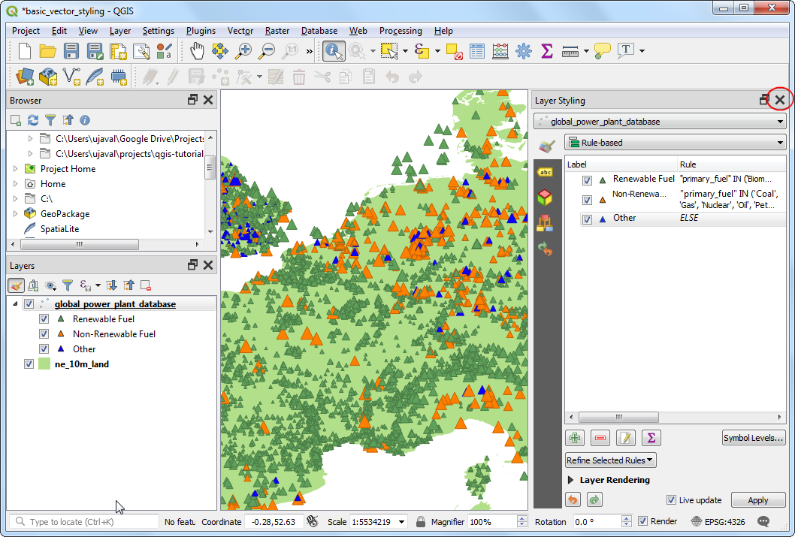

Basis opmaken van vectoren (QGIS3)¶
Men moet de gegevens voor GIS opmaken en ze in een vorm presenteren die visueel informatief is om een kaart te maken. Er zijn een groot aantal opties binnen QGIS beschikbaar om verschillende typen symbologie toe te passen op de onderliggende gegevens. In deze handleiding zullen we een tekstbestand nemen en verschillende technieken voor het visualiseren van de gegevens toepassen om ruimtelijke patronen in de gegevens te accentueren.
Overzicht van de taak¶
We zullen een CSV-bestand gebruiken dat de locatie bevat van alle elektriciteitscentrales in de wereld en een visualisatie maken die de verdeling van herbruikbare en niet-herbruikbare brandstoffen, die in deze elektriciteitscentrales worden gebruikt, weergeeft.
Andere vaardigheden die u zult leren¶
Expressies gebruiken om meerdere waarden voor attributen te groeperen naar één enkele categorie
De gegevens ophalen¶
World Resources Institute heeft een uitgebreide, open source database van elektriciteitscentrales over de gehele wereld samengesteld, die meer dan 30000 centrales bevat. Download de The Global Power Plant Database vanaf het WRI Open Data Portal.
Natural Earth heeft verscheidene globale vectorlagen. Download de 10m Physical Vectors - Land die polygonen voor landen bevat.
Voor het gemak kunt u direct een kopie downloaden van bovenstaande lagen vanaf de links hieronder:
globalpowerplantdatabasev120.zip
Gegevensbron [WRI] [NATURALEARTH]
Procedure¶
Pak beide gegevenssets uit in een map op uw computer. Zoek, in het paneel QGIS Browser, de map op waar u uw gegevens hebt geplaatst. Vergroot de map
ne_10m_landen selecteer de laagne_10m_land.shplayer. Sleep de laag naar het kaartvenster.

U zult een nieuwe laag
ne_10m_landzien worden toegevoegd aan het paneel Lagen. De database met de elektriciteitscentrales in de wereld wordt verschaft als een CSV-bestand, dus we zullen het dienen te importeren. Klik op de knop Databronnen beheren openen op de werkbalk Databronnen. U kunt ook de sneltoets Ctrl + L gebruiken.

Schakel, in het venster Databronnen beheren, naar de tab Tekenbgescheiden tekst. Klik op de knop … naast Bestandsnaam en blader naar de map waar u het bestand
globalpowerplantdatabasev120.ziphebt geplaatst. Selecteerglobal_power_plant_database.csv. QGIS zal automatisch het scheidingsteken en velden met geometrie detecteren. Laat het Geometrie CRS op de standaard waardeEPSG:4326 - WGS84staan. Klik op Toevoegen, gevolgd door Close.

Een nieuwe laag
global_power_plant_databasezal zijn toegevoegd aan het paneel Lagen en u zult de punten zien die elektriciteitscentrales weergeven in het kaartvenster. Nu zijn we klaar om beide lagen op te maken. Klik op de knop Paneel Laag opmaken openen boven in het paneel Lagen.

Het paneel Laag opmaken zal openen aan de rechterzijde. Selecteer eerst de laag
ne_10m_land. Dit zal onze basislaag zijn dus we kunnen de opmaak minimalistisch laten zodat hij niet afleidt. Klik opStandaard vullingen scroll naar beneden. Selecteer een Vulkleur naar uw wens. Klik op de keuzelijst naast Lijnkleur en selecteerTransparante lijn. Dit zal de omtrek van de landpolygonen op transparant instellen. U zult het resultaat van uw selectie direct toegepast op de laag.

Selecteer vervolgens de laag
global_power_plant_database. Klik opStandaard symboolen scroll naar beneden. Kies een driehoekige markering.

Scroll naar boven en selecteer een Vulkleur naar uw wens. Een nuttige cartografische techniek is om een enigszins donkere versie te kiezen van de vulkleur als de Lijnkleur. In plaats van die handmatig te kiezen, verschaft QGIS een expressie om dit meer precies te beheren. Klik op de knop Data-bepaalde ‘override’ en kies Bewerken.

Voer de volgende expressie in om de kleur 30% donkerder in te stellen dan de vulkleur en klik op OK.
darker(@symbol_color, 130)
Notitie
Onthoud dat deze expressie onafhankelijk is van de door u gekozen vulkleur. U zult zien dat dit immens nuttig is in de volgende stappen waar het automatisch de randkleur instelt, gebaseerd op de verschafte vulkleur.
Het zal u zijn opgevallen dat de knop Data-bepaalde ‘override’ naast Lijnkleur geel is geworden - wat aangeeft dat deze eigenschap wordt beheerd door een override. Renderen met een enkel symbool van de laag met elektriciteitscentrales is niet erg nuttig. Het geeft niet veel informatie, met uitzondering van de plaats van de elektriciteitscentrales. Laten we een andere renderer gebruiken om het nuttiger te maken. Klik op de keuzelijst Symbologie en selecteer de rendere
Categorieën.

De laag
global_power_plant_databasebevat een attribuut dat de primaire brandstof aangeeft die wordt gebruikt in elke elektriciteitscentrale. We kunnen een stijl maken waar elk unieke type brandstof wordt weergegeven in een andere kleur. Selecteerprimary_fuelals de Kolom. Klik op Classificeren. U zult meerdere categorieën zien verschijnen en de rendering van de kaart verandert overeenkomstig.

Hoewel een weergave in categorieën nuttig is, bevat deze laag teveel categorieën om de betekenis van de kaart te kunnen interpreteren. Een betere benadering zou zijn om bepaalde categorieën brandstof te groeperen en het aantal klassen te verkleinen. Laten we proberen 3 categorieën te maken - Herbruikbare brandstof, Niet-herbruikbare brandstof en Anders. Selecteer de renderer
Regel gebaseerd. We willen alle categorieën verwijderen, behalve de bovenste. Selecteer de tweede categorie van boven, houd de Shift-toets ingedrukt en klik op de onderste categorie. Dit zal alle categorieën selecteren, behalve de bovenste. Indien geselecteerd, klik op de knop Geselecteerde regels verwijderen om ze te verwijderen.

Selecteer de resterende regel en klik op Huidige regel bewerken.

Voer
Herbruikbare brandstofin als het Label. Klik op de knop Expressie naast Filter.

Voer, in het dialoogvenster Expressie-string bouwer, de volgende expressie in en klik op OK. Hier groeperen we meerdere categorieën herbruikbare brandstof tot één enkele categorie.
"primary_fuel" IN ('Biomass', 'Geothermal', 'Hydro', 'Solar', 'Wind', 'Storage', 'Wave and Tidal')
Notitie
De typen brandstof voor de categorieën herbruikbaar of niet-herbruikbaar is gebaseerd op Wikipedia. Er zijn alternatieve definities en classificaties die niet overeen zouden hoeven te komen met wat hier is gekozen.
Scroll naar beneden en klik op Standaard symbool. Kies een toepasselijke vulkleur Vulkleur. Indien gereed, klik op de knop Ga terug.

U zult zien dat één enkele regel wordt toegepast op de laag en wel voor de categorie Herbruikbare brandstof. Klik met rechts op de rij en kies Kopiëren. Klik met rechts en kies Plakken.
Een kopie van de bestaande regel zal worden toegevoegd. Selecteer de nieuw toegevoegde regel en klik op Huidige regel bewerken.

Voer
Niet-herbruikbare brandstofin als het Label. Klik op de knop Expressie naast Filter.

Voer, in het dialoogvenster Expressie-string bouwer, de volgende expressie in en klik op OK.
"primary_fuel" IN ('Coal', 'Gas', 'Nuclear', 'Oil', 'Petcoke')
Scroll naar beneden en klik op Standaard symbool. Kies een toepasselijke vulkleur Vulkleur. Indien gereed, klik op de knop Ga terug.

Herhaal het proces voor kopiëren en plakken om een derde regel toe te voegen. Selecteer die en klik op Huidige regel bewerken.

Voer
Andersin als het Label. Kies Anders - Voor andere objecten alles ophalen in plaats van een Filter. Dit zal er voor zorgen dat een categorie die wordt gemist in de eerdere 2 regels, zal worden opgemaakt door deze regel. Scroll naar beneden en klik op Standaard symbool. Kies een toepasselijke Vulkleur. Eenmaal gereed, klik op de knop Ga terug.

Het opnieuw categoriseren is nu voltooid. U zult een veel helderder weergave zien die de verdeling weergeeft van herbruikbare vs. niet-herbruikbare bronnen voor brandstof, gebruikt door elektriciteitscentrales en hun verdeling over landen. Dit geeft echter nog geen volledig beeld. We kunnen een andere variabele toevoegen aan de opmaak. In plaats van het weergeven van alle markeringen met een uniforme grootte, kunnen we de grootten proportioneel laten zien ten opzichte van de opgewekte energie voor elke centrale. Deze cartografische techniek wordt Multivariate mapping genoemd. Klik met rechts op de regel
Herbruikbare brandstofen selecteer Grootte wijzigen.

Klik op de knop Data-bepaalde ‘override’ naast Grootte. Selecteer Bewerken.

Omdat de capaciteit van opgewekte energie enorm varieert in onze gegevensset, is een effectieve manier om een kleiner bereik voor de grootte te krijgen is de functie
log10. U kunt experimenteren met verschillende expressies om te zien wat het beste werkt voor uw visualisatie. Voer de volgende expressie in en klik op OK.
log10("capacity_mw") + 1
Herhaal hetzelfde proces voor de andere regels.

Als u tevreden bent kunt u het paneel Laag opmaken sluiten.

Kijkend naar onze uiteindelijke visualisatie, kunt u onmiddellijk de patronen zien in de gegevensset. In Europa bijvoorbeeld zijn meer centrales die herbruikbare brandstof gebruiken, maar zij hebben een lagere capaciteit dan de centrales die niet herbruikbare energiebronnen gebruiken.

If you want to give feedback or share your experience with this tutorial, please comment below. (requires GitHub account)